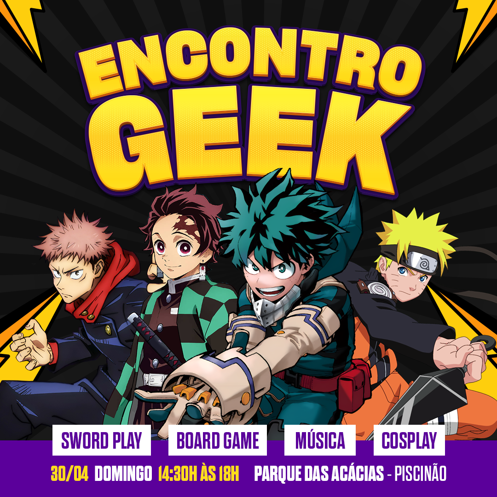

Encontro Geek Ura
O Encontro Geek Ura é o primeiro evento organizado pela Ygg Eventos com o intuito de fomentar e movimentar a comunidade geek de Uberaba. Proporcionamos diversas atividades ao ar livre onde você pode trazer sua família e amigos para se divertir. Os encontros já estão na sua 5ª edição e tem uma média de público entre 60 a 80 pessoas.
-
Abril
 -
Maio
-
Junho

-
Agosto
-
Setembro
Localização
Os encontros são realizados no Parque da Acácias, também conhecido como Piscinão.